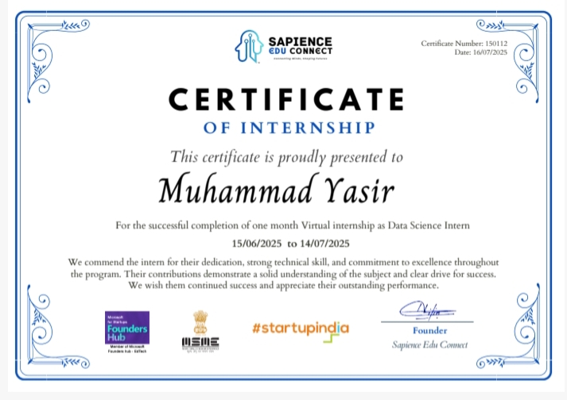
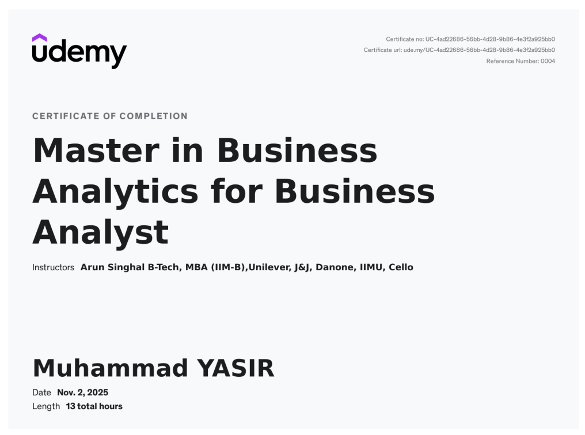
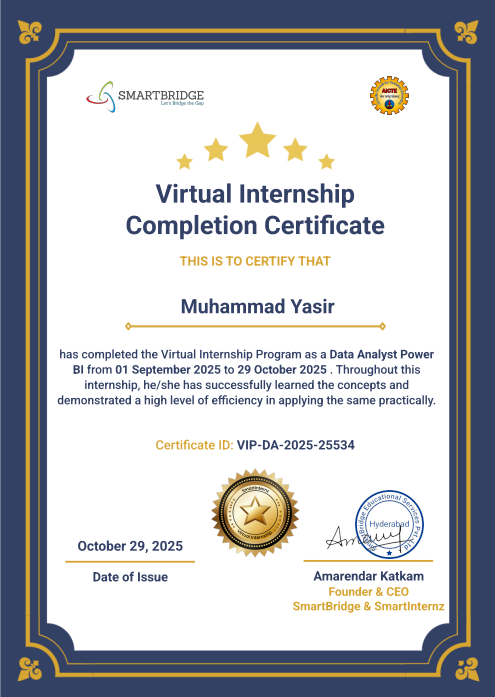
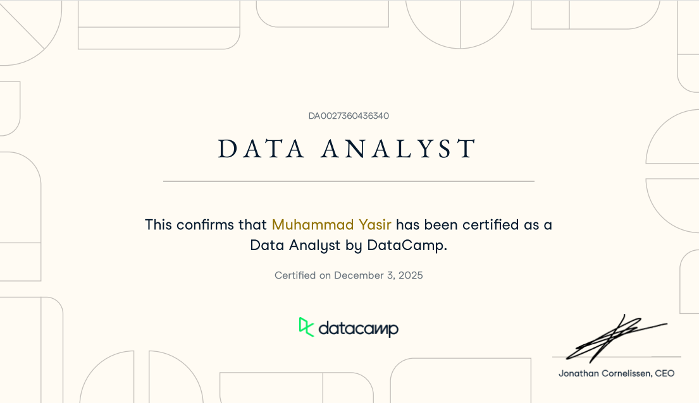
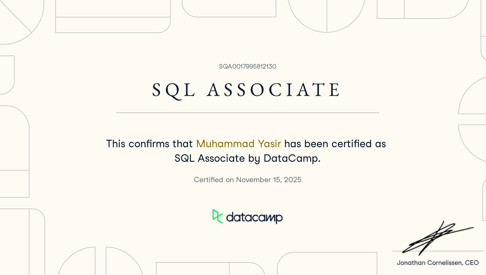

Crafting data stories
that drive results.
Specializing in data analysis, visualization, and predictive modeling to solve real business problems.
10+
Projects Completed
85%
Avg Model Accuracy
7+
Dashboards Built
Muhammad Yasir
Data Analyst - PakistanTurning data into clarity, insight, and impact through dashboards and analytics.
Technologies & Tools
2+ Years Experience
View Full Resume →
Experience & Certifications

Data Science Internship
Sapience Edu Connect Pvt Ltd
June 2025 – August 2025
Developed predictive and forecasting model.

Master in Business Analytics For Business Analyst
Udemy
2025
Udemy-certified Business Analytics professional with experience in business requirement gathering, stakeholder communication, documentation, and translating data insights into actionable business solutions.

Power BI Virtual Internship
SmartBridge
2 Months
Learned Power BI, Power Query, DAX and Data visualization techniques with real-world datasets.

Certified Data Analyst
Datacamp
2025
Covered supervised learning, classification, and predictive modeling.

SQL Associate
Datacamp
2025
Skilled in writing optimized queries, managing relational databases, and delivering data-driven insights for efficient decision-making.
Selected Work
Drive smarter decisions with data-driven solutions.
I'm always open to discussing data projects, business insights, or analytics collaborations.